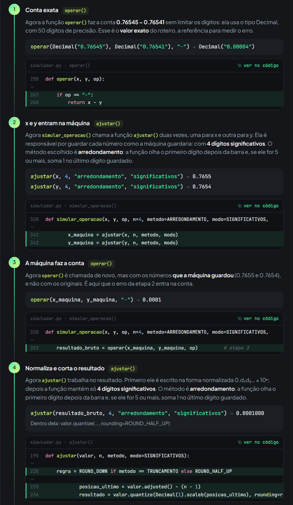
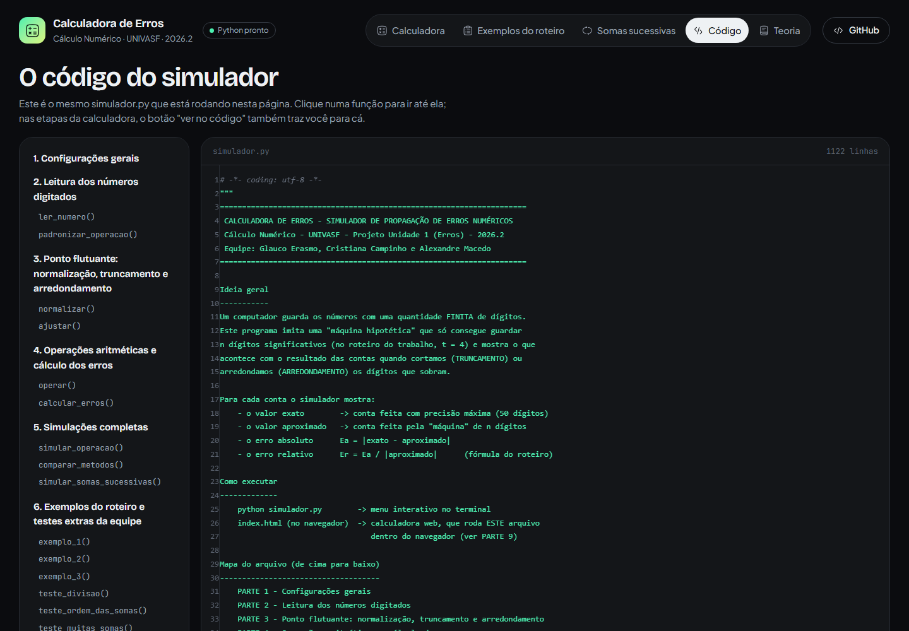

Fundação Universidade Federal do Vale do São Francisco
Disciplina de Cálculo Numérico · Projeto Unidade 1 (Erros) · 2026.2
Relatório final · Atividade Prática 1
Simulador de propagação de erros numéricos com truncamento e arredondamento
Glauco Erasmo
Cristiana Campinho
Alexandre Macedo
glaucoe18.github.io/simulador-erros-numericos/
Código-fontegithub.com/GlaucoE18/simulador-erros-numericos
Outubro de 2026
Este relatório apresenta a Calculadora de Erros, o simulador desenvolvido pela equipe para a Atividade Prática 1 da disciplina. O programa funciona como uma calculadora de precisão limitada: ele imita uma máquina hipotética que guarda apenas n dígitos significativos e mostra, para cada operação, o valor exato, o valor aproximado e os erros absoluto e relativo, usando truncamento ou arredondamento.
Os objetivos, conforme o roteiro, foram:
O trabalho tem três entregas: o código-fonte no GitHub (https://github.com/GlaucoE18/simulador-erros-numericos), a calculadora online (https://glaucoe18.github.io/simulador-erros-numericos/), que roda o mesmo código no navegador, e este relatório.
Um computador representa números reais num sistema de ponto flutuante F(β, t, m, M), em que β é a base, t é a quantidade de dígitos da mantissa e o expoente e varia entre −m e M. Todo número diferente de zero é escrito na forma normalizada:
Na máquina hipotética do roteiro, β = 10 e t = 4. O exemplo do enunciado, 123.45, fica 0.12345 × 10³. Como só cabem 4 dígitos na mantissa, o último dígito (5) não pode ser guardado. A máquina precisa decidir o que fazer com ele.
No truncamento, os dígitos que excedem t são simplesmente descartados. No arredondamento, olha-se o primeiro dígito descartado: se ele for maior ou igual a 5, soma-se 1 ao último dígito guardado. Com t = 4:
Para um número de expoente e, o último dígito guardado vale 10e−t. O erro do truncamento é sempre menor que essa unidade, e sempre para o mesmo lado (em direção ao zero). O do arredondamento é no máximo metade dela. Em termos relativos, isso dá os limites clássicos[1]:
| Limite do erro relativo | Com t = 4 | |
|---|---|---|
| Truncamento | < 10^(1−t) | < 0.001 = 0.1% |
| Arredondamento | ≤ ½ · 10^(1−t) | ≤ 0.0005 = 0.05% |
Seguindo o roteiro, para cada operação calculamos:
O erro absoluto mede o tamanho do erro na mesma unidade do resultado. O relativo mede o erro em proporção ao resultado, e por isso permite comparar contas de tamanhos diferentes.
Quando as contas são feitas em sequência, o resultado arredondado de uma etapa é a entrada da etapa seguinte. Os erros não desaparecem: eles se propagam e se acumulam. Um caso especialmente ruim é a subtração de dois números muito próximos. Os dígitos iguais se cancelam, e os poucos dígitos que sobram são justamente os que carregavam o erro. É o cancelamento subtrativo: um erro pequeno nos operandos vira um erro relativo grande no resultado[1, 3].
O simulador recebe como entrada:
Como opções extras, a critério da equipe, também é possível escolher:
Para cada operação o programa faz cinco etapas:
Ele também simula somas sucessivas (Exemplo 3) com qualquer parcela e quantidade, e traz os exemplos do roteiro e os testes extras prontos.
Online, sem instalar nada: abrir https://glaucoe18.github.io/simulador-erros-numericos/. A página carrega o Python dentro do navegador e executa o próprio simulador.py; na primeira vez isso leva alguns segundos.
No terminal, só com o Python 3.10 ou mais novo (nenhuma biblioteca extra):
$ git clone https://github.com/GlaucoE18/simulador-erros-numericos $ cd simulador-erros-numericos $ python simulador.py # menu interativo $ python simulador.py --testes # imprime todos os testes deste relatório
O menu tem as opções de nova operação, os três exemplos do roteiro, somas sucessivas personalizadas, rodar todos os testes e 0) Sair. Depois de cada cálculo ele pergunta se a pessoa quer fazer outro, então é possível fazer novos testes sem reiniciar o programa, como pede o roteiro. Para rodar a página web localmente: python -m http.server 8000 e abrir http://localhost:8000.
A regra principal do projeto é que toda a matemática fica num único arquivo, o simulador.py. O menu do terminal e a página web chamam as mesmas funções, e por isso os dois dão exatamente os mesmos números.
| Arquivo | O que contém |
|---|---|
| simulador.py | Toda a matemática, o menu do terminal e a ponte com a página (9 partes) |
| index.html | A estrutura da página (o que aparece na tela) |
| estilo.css | O visual da página |
| interface.js | Teclado, passo a passo e abas. Não faz contas: chama o simulador.py |
| icones.js | Os desenhos dos ícones |
| Parte | Conteúdo | Funções principais |
|---|---|---|
| 1 | Configurações (precisão de 50 dígitos, métodos e modos) | — |
| 2 | Leitura dos números digitados | ler_numero |
| 3 | Ponto flutuante: normalização, truncamento e arredondamento | normalizar, ajustar |
| 4 | Operações e cálculo dos erros | operar, calcular_erros |
| 5 | Simulações completas | simular_operacao, simular_somas_sucessivas |
| 6 | Exemplos do roteiro e testes extras | exemplo_1, exemplo_2, exemplo_3, … |
| 7 | Formatação para exibir | formatar, formatar_cientifico, separar_corte |
| 8 | Menu interativo do terminal | menu |
| 9 | Ponte com a página web | tela_operacao, tela_somas, tela_exemplos |
Os trechos abaixo foram copiados do código atual (as docstrings, que explicam cada função no arquivo, foram omitidas para economizar espaço).
É o coração do trabalho. A função calcula a posição do último dígito que a máquina mantém (posicao_ultimo) e corta o número nessa posição com Decimal.quantize. Com ROUND_DOWN o corte é um truncamento; com ROUND_HALF_UP, um arredondamento. Para 1.13572 com n = 4, o primeiro dígito está em 10⁰, então o último que fica está em 10⁻³, e o número vira 1.135 ou 1.136. O if interno trata um caso raro: arredondar 9.9996 dá 10.000 (5 dígitos), e a função refaz o corte uma casa acima para obter 10.00.
def ajustar(valor, n, metodo, modo=SIGNIFICATIVOS):
_validar(n, metodo, modo)
if valor == 0:
return Decimal(0)
regra = ROUND_DOWN if metodo == TRUNCAMENTO else ROUND_HALF_UP
try:
if modo == SIGNIFICATIVOS:
# Potência de 10 do ÚLTIMO dígito que a máquina mantém.
# Ex.: 1.13572 tem o 1º dígito em 10^0; com n = 4 o último
# dígito mantido fica em 10^(0 - 3) = 10^-3 -> 1.135
posicao_ultimo = valor.adjusted() - (n - 1)
resultado = valor.quantize(Decimal(1).scaleb(posicao_ultimo), rounding=regra)
# Caso especial do arredondamento: 9.9996 com n = 4 vira 10.000,
# que tem 5 dígitos (o número "subiu" de 0.9999×10^1 para
# 0.1000×10^2). Refazemos o ajuste uma casa acima para voltar a
# ter exatamente n dígitos: 10.00. O valor não muda, só a forma.
if resultado.adjusted() > valor.adjusted():
resultado = resultado.quantize(Decimal(1).scaleb(posicao_ultimo + 1), rounding=regra)
else:
# Modo casas decimais: o último dígito mantido fica sempre em 10^-n.
resultado = valor.quantize(Decimal(1).scaleb(-n), rounding=regra)
except InvalidOperation:
# Acontece se o número for gigantesco para a precisão de 50 dígitos.
raise ValueError("Número grande demais para essa configuração de precisão.") from None
return resultado
Aplica Ea = |exato − aprox| e Er = Ea / |aprox|. Quando o aproximado é 0, Er não existe (seria divisão por zero); a função devolve None e as interfaces mostram "indefinido". Ela também calcula o erro relativo em relação ao exato, usado na análise da seção 5.
def calcular_erros(exato, aproximado):
absoluto = abs(exato - aproximado)
relativo = absoluto / abs(aproximado) if aproximado != 0 else None
relativo_exato = absoluto / abs(exato) if exato != 0 else None
return {
"absoluto": absoluto,
"relativo": relativo,
"percentual": relativo * 100 if relativo is not None else None,
"relativo_exato": relativo_exato,
}
Junta tudo na ordem do roteiro e devolve um dicionário com cada etapa. É esse dicionário que o terminal imprime e que a página desenha.
def simular_operacao(x, y, op, n=4, metodo=ARREDONDAMENTO, modo=SIGNIFICATIVOS,
ajustar_operandos=True):
x, y = ler_numero(x), ler_numero(y)
op = padronizar_operacao(op)
_validar(n, metodo, modo)
exato = operar(x, y, op) # etapa 1
if ajustar_operandos: # etapa 2
x_maquina = ajustar(x, n, metodo, modo)
y_maquina = ajustar(y, n, metodo, modo)
else:
x_maquina, y_maquina = x, y
# Caso raro: no modo casas decimais, um y muito pequeno (ex.: 0.00004 com
# 4 casas) vira 0 dentro da máquina, e aí a máquina não consegue dividir.
if op == "/" and y_maquina == 0:
raise ZeroDivisionError(
f"y = {formatar(y)} vira 0 quando guardado com {descrever_precisao(n, modo)}, "
"e a máquina não consegue dividir por zero.")
resultado_bruto = operar(x_maquina, y_maquina, op) # etapa 3
aproximado = ajustar(resultado_bruto, n, metodo, modo) # etapa 4
erros = calcular_erros(exato, aproximado) # etapa 5
return {
"x": x, "y": y, "op": op, "n": n, "metodo": metodo, "modo": modo,
"ajustar_operandos": ajustar_operandos,
"exato": exato,
"x_maquina": x_maquina,
"y_maquina": y_maquina,
"resultado_bruto": resultado_bruto,
"aproximado": aproximado,
"erros": erros,
# Curiosidade: a mesma conta feita com float (double). Mostra que a
# "precisão máxima" do float também tem erro de representação.
"resultado_float": _operar_float(x, y, op),
}
O laço soma a parcela ao valor acumulado, corta o resultado em n dígitos e guarda cada passo. O valor cortado é o que entra na soma seguinte, e é assim que o erro de um passo passa para o próximo.
passos = []
for i in range(1, numero_de_somas + 1):
anterior = acumulado
soma_bruta = anterior + parcela_maquina # conta feita pela máquina
acumulado = ajustar(soma_bruta, n, metodo, modo) # máquina guarda só n dígitos
exato = exato + parcela # o que deveria dar
passos.append({
"passo": i,
"anterior": anterior,
"parcela": parcela_maquina,
"soma_bruta": soma_bruta,
"armazenado": acumulado,
"exato": exato,
"erro_absoluto": abs(exato - acumulado),
O laço while True mostra o menu até a pessoa digitar 0. Cada opção chama uma função e volta para o menu.
def menu():
opcoes = {
"1": ("Nova operação (você escolhe x, y, operação, n e método)", _opcao_nova_operacao),
"2": ("Exemplo 1 - Soma simples (truncamento x arredondamento)", _opcao_exemplo_1),
"3": ("Exemplo 2 - Cancelamento subtrativo", _opcao_exemplo_2),
"4": ("Exemplo 3 - Propagação do erro em 10 somas", _opcao_exemplo_3),
"5": ("Somas sucessivas personalizadas", _opcao_somas_personalizadas),
"6": ("Rodar todos os testes do relatório", _opcao_rodar_tudo),
}
while True:
_titulo("Calculadora de Erros - Simulador de Propagação de Erros Numéricos")
for chave, (descricao, _) in opcoes.items():
print(f" {chave}) {descricao}")
print(" 0) Sair")
escolha = input("\n Escolha uma opção: ").strip()
if escolha == "0":
print("\n Até a próxima!\n")
return
if escolha in opcoes:
opcoes[escolha][1]()
else:
print(" [!] Opção inválida. Digite um número do menu.")
A página web executa o simulador.py dentro do navegador com o Pyodide, uma versão do Python feita para rodar em páginas web[6]. O JavaScript não faz conta nenhuma: ele chama esta função, que roda a operação com o método escolhido e com o outro (para a tabela de comparação), e recebe os números já formatados em JSON.
def tela_operacao(x, y, op, n, metodo, modo, ajustar_operandos):
try:
n = int(n)
r = simular_operacao(x, y, op, n, metodo, modo, bool(ajustar_operandos))
outro = ARREDONDAMENTO if metodo == TRUNCAMENTO else TRUNCAMENTO
r_outro = simular_operacao(x, y, op, n, outro, modo, bool(ajustar_operandos))
return json.dumps({"ok": True, "atual": _operacao_para_tela(r),
"outro": _operacao_para_tela(r_outro)})
except (ValueError, ZeroDivisionError) as erro:
return json.dumps({"ok": False, "erro": str(erro)})
A versão online tem um teclado de calculadora e, ao lado, um painel com o resultado e o passo a passo. Ao apertar "=", as seis etapas acendem uma de cada vez. Cada etapa diz qual função do simulador.py está trabalhando, pelo que ela é responsável e o que aconteceu com os números, desenhando o corte (o que fica à esquerda da barra é guardado; o que fica à direita é descartado).
No modo Código, cada etapa mostra a chamada real da função, o valor devolvido e as linhas do simulador.py que rodaram, com o número de cada linha. As setas permitem avançar etapa por etapa, o que ajuda na apresentação.

A página tem ainda as abas Exemplos do roteiro (Figura 3), Somas sucessivas (com gráfico e tabela), Código (o simulador.py completo, com índice das partes; Figura 4) e Teoria. Para um novo cálculo basta digitar outros números ou apertar AC.

Seguimos o procedimento comum do roteiro: para cada caso informamos os dados, calculamos o resultado de referência com precisão máxima, executamos o simulador com t = 4 por truncamento e por arredondamento e comparamos os resultados em tabela. Todos os valores abaixo foram gerados pelo próprio simulador.py (python simulador.py --testes) e conferem com a calculadora online. Nas tabelas, "na máquina" é o valor guardado com 4 dígitos; os zeros à direita mostram os dígitos que a máquina ocupa.
O roteiro pede a soma de dois números com 5 casas decimais. Escolhemos π ≈ 3.14159 e e ≈ 2.71828. Valor exato: 3.14159 + 2.71828 = 5.85987.
| Método | x na máquina | y na máquina | Conta da máquina | Aproximado | Ea | Er | Er (%) |
|---|---|---|---|---|---|---|---|
| Truncamento | 3.141 | 2.718 | 3.141 + 2.718 = 5.859 | 5.859 | 0.00087 | 0.00014849 | 0.014849 % |
| Arredondamento | 3.142 | 2.718 | 3.142 + 2.718 = 5.86 | 5.860 | 0.00013 | 0.0000221843 | 0.00221843 % |
Os dois operandos já perdem informação ao entrar na máquina: 3.14159 vira 3.141 (truncando) ou 3.142 (arredondando). O truncamento joga os dois números para baixo, e o resultado fica 0.00087 abaixo do exato. O arredondamento erra 0.00013, cerca de 6.7 vezes menos. Os dois erros relativos (0.014849 % e 0.00221843 %) ficam dentro dos limites teóricos da seção 2.2.
x = 0.76545 e y = 0.76541 diferem só na última casa. Valor exato: x − y = 0.00004 = 4.0 × 10⁻⁵. Como pede o roteiro, x e y são armazenados com 4 dígitos antes da subtração.
| Método | x na máquina | y na máquina | Conta da máquina | Aproximado | Ea | Er | Er (%) |
|---|---|---|---|---|---|---|---|
| Truncamento | 0.7654 | 0.7654 | 0.7654 − 0.7654 = 0 | 0 | 0.00004 | indefinido | indefinido |
| Arredondamento | 0.7655 | 0.7654 | 0.7655 − 0.7654 = 0.0001 | 0.0001000 | 0.00006 | 0.6 | 60 % |
Com arredondamento o resultado é exatamente o do roteiro: x vira 0.7655, y vira 0.7654, 0.7655 − 0.7654 = 0.0001, Ea = 0.00006 e Er = 0.6 (60%).
Com truncamento acontece o caso que o roteiro pede para demonstrar: x e y viram ambos 0.7654 e a subtração dá zero. A máquina perde o resultado inteiro, e o erro relativo da fórmula do roteiro nem pode ser calculado, porque o aproximado é 0. Em relação ao valor exato, o erro relativo é de 100%.
========================================================================
EXEMPLO 2 - CANCELAMENTO SUBTRATIVO
========================================================================
Valor exato: 0.00004
Método | x máquina | y máquina | Aproximado | Ea | Er | Er (%)
---------------+-----------+-----------+------------+---------+------------+-----------
truncamento | 0.7654 | 0.7654 | 0 | 0.00004 | indefinido | indefinido
arredondamento | 0.7655 | 0.7654 | 0.0001000 | 0.00006 | 0.6 | 60 %
>> Com truncamento, x e y ficaram IGUAIS na máquina e a subtração
deu ZERO (subtração nula): perdemos 100% da informação, e o erro
relativo nem pode ser calculado (divisão por zero).
O que observar: x e y estavam certos em 4 dígitos, mas são quase
iguais. Na subtração os dígitos iguais se cancelam e sobra só o
último dígito, que era justamente o que tinha erro. Um erro pequeno
nos operandos virou um erro relativo enorme no resultado.Para confirmar que o problema é a falta de dígitos, repetimos com n = 5: x e y cabem inteiros, a subtração dá 0.000040000 e o erro é 0 nos dois métodos.
Somar 0.56786 dez vezes. Valor exato: 10 × 0.56786 = 5.6786. Seguindo o roteiro, a primeira soma é 0.56786 + 0.56786, e depois de cada soma o resultado é cortado em 4 dígitos significativos antes de entrar na soma seguinte (são 9 somas para 10 parcelas).
| Soma | Exato | Truncamento: conta | Guardado | Erro | Arredondamento: conta | Guardado | Erro |
|---|---|---|---|---|---|---|---|
| 1 | 1.13572 | 0.56786 + 0.56786 = 1.13572 | 1.135 | 0.00072 | 0.56786 + 0.56786 = 1.13572 | 1.136 | 0.00028 |
| 2 | 1.70358 | 1.135 + 0.56786 = 1.70286 | 1.702 | 0.00158 | 1.136 + 0.56786 = 1.70386 | 1.704 | 0.00042 |
| 3 | 2.27144 | 1.702 + 0.56786 = 2.26986 | 2.269 | 0.00244 | 1.704 + 0.56786 = 2.27186 | 2.272 | 0.00056 |
| 4 | 2.8393 | 2.269 + 0.56786 = 2.83686 | 2.836 | 0.0033 | 2.272 + 0.56786 = 2.83986 | 2.840 | 0.0007 |
| 5 | 3.40716 | 2.836 + 0.56786 = 3.40386 | 3.403 | 0.00416 | 2.840 + 0.56786 = 3.40786 | 3.408 | 0.00084 |
| 6 | 3.97502 | 3.403 + 0.56786 = 3.97086 | 3.970 | 0.00502 | 3.408 + 0.56786 = 3.97586 | 3.976 | 0.00098 |
| 7 | 4.54288 | 3.970 + 0.56786 = 4.53786 | 4.537 | 0.00588 | 3.976 + 0.56786 = 4.54386 | 4.544 | 0.00112 |
| 8 | 5.11074 | 4.537 + 0.56786 = 5.10486 | 5.104 | 0.00674 | 4.544 + 0.56786 = 5.11186 | 5.112 | 0.00126 |
| 9 | 5.6786 | 5.104 + 0.56786 = 5.67186 | 5.671 | 0.0076 | 5.112 + 0.56786 = 5.67986 | 5.680 | 0.0014 |
| Método | Exato | Aproximado | Ea total | Er total | Er (%) |
|---|---|---|---|---|---|
| Truncamento | 5.6786 | 5.671 | 0.0076 | 0.00134015 | 0.134015 % |
| Arredondamento | 5.6786 | 5.680 | 0.0014 | 0.000246479 | 0.0246479 % |
O roteiro apresenta esse exemplo com os valores 1.1357, 1.7035, 2.2713… Esses números têm 4 casas decimais (5 dígitos significativos). No modo "casas decimais", o simulador reproduz exatamente esses valores:
| Soma | Exato | Truncamento: conta | Guardado | Erro | Arredondamento: conta | Guardado | Erro |
|---|---|---|---|---|---|---|---|
| 1 | 1.13572 | 0.56786 + 0.56786 = 1.13572 | 1.1357 | 0.00002 | 0.56786 + 0.56786 = 1.13572 | 1.1357 | 0.00002 |
| 2 | 1.70358 | 1.1357 + 0.56786 = 1.70356 | 1.7035 | 0.00008 | 1.1357 + 0.56786 = 1.70356 | 1.7036 | 0.00002 |
| 3 | 2.27144 | 1.7035 + 0.56786 = 2.27136 | 2.2713 | 0.00014 | 1.7036 + 0.56786 = 2.27146 | 2.2715 | 0.00006 |
| 4 | 2.8393 | 2.2713 + 0.56786 = 2.83916 | 2.8391 | 0.0002 | 2.2715 + 0.56786 = 2.83936 | 2.8394 | 0.0001 |
| 5 | 3.40716 | 2.8391 + 0.56786 = 3.40696 | 3.4069 | 0.00026 | 2.8394 + 0.56786 = 3.40726 | 3.4073 | 0.00014 |
| 6 | 3.97502 | 3.4069 + 0.56786 = 3.97476 | 3.9747 | 0.00032 | 3.4073 + 0.56786 = 3.97516 | 3.9752 | 0.00018 |
| 7 | 4.54288 | 3.9747 + 0.56786 = 4.54256 | 4.5425 | 0.00038 | 3.9752 + 0.56786 = 4.54306 | 4.5431 | 0.00022 |
| 8 | 5.11074 | 4.5425 + 0.56786 = 5.11036 | 5.1103 | 0.00044 | 4.5431 + 0.56786 = 5.11096 | 5.1110 | 0.00026 |
| 9 | 5.6786 | 5.1103 + 0.56786 = 5.67816 | 5.6781 | 0.0005 | 5.1110 + 0.56786 = 5.67886 | 5.6789 | 0.0003 |
| Método | Exato | Aproximado | Ea total | Er total | Er (%) |
|---|---|---|---|---|---|
| Truncamento | 5.6786 | 5.6781 | 0.0005 | 0.0000880576 | 0.00880576 % |
| Arredondamento | 5.6786 | 5.6789 | 0.0003 | 0.0000528271 | 0.00528271 % |
A) Divisão com dízima: 2 ÷ 3. O resultado 0.666… não cabe em nenhuma máquina finita.
| Método | x na máquina | y na máquina | Conta da máquina | Aproximado | Ea | Er | Er (%) |
|---|---|---|---|---|---|---|---|
| Truncamento | 2.000 | 3.000 | 2.000 ÷ 3.000 = 0.666666666667… | 0.6666 | 0.0000666667 | 0.00010001 | 0.010001 % |
| Arredondamento | 2.000 | 3.000 | 2.000 ÷ 3.000 = 0.666666666667… | 0.6667 | 0.0000333333 | 0.0000499975 | 0.00499975 % |
B) A ordem das somas importa. Somar 0.4 dez vezes a 1000 (exato: 1004). Com 4 dígitos, 1000 + 0.4 = 1000.4 não cabe e volta a ser 1000 a cada soma. Somando primeiro os 0.4 (que dão 4.000) e só depois o 1000, o resultado é exato.
| Ordem das somas | Resultado na máquina | Exato |
|---|---|---|
| 1000 + 0.4 + 0.4 + … (1000 primeiro) | 1000 | 1004 |
| (0.4 + 0.4 + …) + 1000 (pequenos primeiro) | 1004 | 1004 |
C) O Exemplo 3 com 100 somas. Para ver o erro crescer por mais tempo.
| Método | Exato | Aproximado | Ea total | Er total | Er (%) |
|---|---|---|---|---|---|
| Truncamento | 56.786 | 56.12 | 0.666 | 0.0118674 | 1.18674 % |
| Arredondamento | 56.786 | 56.96 | 0.174 | 0.00305478 | 0.305478 % |
D) O próprio float também erra. As mesmas contas feitas com float, o tipo numérico padrão do Python, e com Decimal:
| Conta | Resultado em float | Resultado em Decimal |
|---|---|---|
| 0.1 + 0.2 | 0.30000000000000004 | 0.3 |
| 0.76545 − 0.76541 | 3.999999999992898e-05 | 0.00004 |
| 0.29 × 100 | 28.999999999999996 | 29 |
Em todos os testes a causa é a mesma: a máquina só guarda 4 dígitos, então todo número com mais dígitos é substituído pelo número guardável mais próximo (arredondamento) ou pelo imediatamente abaixo, em módulo (truncamento). A informação descartada não volta. O erro aparece em dois momentos:
| Teste | Ea truncamento | Ea arredondamento | Arredondamento erra |
|---|---|---|---|
| Ex. 1 · 3.14159 + 2.71828 | 0.00087 | 0.00013 | 6.7× |
| Ex. 2 · 0.76545 − 0.76541 | 0.00004 (resultado 0) | 0.00006 | truncamento menor, mas perdeu o resultado |
| Ex. 3 · 10 somas | 0.0076 | 0.0014 | 5.4× |
| Extra A · 2 ÷ 3 | 0.0000666667 | 0.0000333333 | 2× |
| Extra C · 100 somas | 0.666 | 0.174 | 3.8× |
Na maioria dos casos o arredondamento erra bem menos, como prevê a teoria: o erro de cada corte é no máximo meia unidade do último dígito, contra quase uma unidade inteira no truncamento. A diferença mais importante, porém, é a direção. O truncamento leva sempre o número para mais perto do zero, então os erros de vários cortes têm o mesmo sinal e se somam. No Exemplo 3, cada soma perde cerca de 0.00086 por truncamento, sempre para baixo. Já o arredondamento ora sobe, ora desce, conforme os dígitos descartados. No Exemplo 3 ele sobe sempre (cerca de 0.00014 por soma), porque a parcela é sempre a mesma e deixa sempre o mesmo resto. Ainda assim, o erro é cerca de 6.1 vezes menor por passo.
O Exemplo 2 mostra que o arredondamento não é melhor em todo caso individual. Ali o truncamento teve o menor erro absoluto (0.00004 contra 0.00006), mas a resposta dele foi zero, ou seja, ele perdeu completamente o resultado. Os dois são desastrosos nesse caso, por causa do cancelamento.
Ao entrar na máquina, x e y ganharam erros pequenos: 0.00005 e 0.00001 (menos de 0.01% de cada valor). Na subtração, os três primeiros dígitos (0.765) são iguais e se cancelam, e sobra só o último, justamente o que estava errado. O erro dos operandos, somado (0.00006), passa a ser comparado com um resultado minúsculo (0.00004). O erro relativo em relação ao exato é 150 %, e o da fórmula do roteiro, 60%. Isso acontece porque o erro relativo de uma diferença é aproximadamente (|x|·εx + |y|·εy) / |x − y|: quanto mais próximos x e y, menor o denominador e maior a amplificação[1].
Há duas formas de evitar o problema:
No Exemplo 3 o erro cresce de forma quase linear, porque cada soma acrescenta um erro parecido com o da anterior (Figura 5). Com 100 somas (Figura 6) aparece um detalhe próprio do ponto flutuante. Até a 16ª soma, o acumulado está entre 1 e 10, e 4 dígitos significativos dão 3 casas decimais (ex.: 5.671). A partir da 17ª, ele passa de 10, e os mesmos 4 dígitos dão só 2 casas (ex.: 10.21). Cada soma passa a perder 10 vezes mais, e a curva fica mais inclinada. No ponto flutuante, o que se mantém sob controle é o erro relativo de cada operação; o erro absoluto cresce com o tamanho do número.
O teste B mostra uma consequência prática: na máquina, a soma não é associativa. Somar um número pequeno a um muito maior pode não mudar nada, porque o pequeno fica inteiro abaixo do último dígito guardado. Somar os pequenos primeiro preserva a informação. É por isso que algoritmos numéricos se preocupam com a ordem das operações.
O enunciado pede uma máquina com t = 4 dígitos significativos, mas ao detalhar o Exemplo 3 mostra 1.13572 → 1.1357, um valor com 5 dígitos significativos (4 casas decimais). Com 4 dígitos significativos de fato, a primeira soma fica 1.135 (truncamento) e o resultado final é 5.671, e não 5.6781. Como o PDF não é consistente nesse ponto, o simulador oferece os dois modos. As Tabelas 3 e 4 seguem o t = 4 do enunciado, e as Tabelas 5 e 6 reproduzem o PDF. As conclusões são as mesmas nos dois casos: o erro cresce a cada soma e o truncamento erra mais. Com 4 casas decimais, a máquina tem 5 dígitos significativos para números entre 1 e 10, e por isso o erro final é menor (0.0005 contra 0.0076 no truncamento).
O roteiro pede o valor exato "calculado com a precisão máxima da linguagem". A Tabela 10 mostra por que isso exige cuidado: em float, 0.1 + 0.2 dá 0.30000000000000004 e 0.76545 − 0.76541 dá 3.999999999992898e-05, porque esses números não têm representação exata em base 2[3, 4]. Se usássemos float como referência, o "valor exato" já viria com erro, e o próprio truncamento sairia errado (o caso 0.29 → 0.28 do protótipo). Com o Decimal, a referência é exata para +, − e × e tem 50 dígitos corretos na divisão.
Seguimos o roteiro e dividimos pelo valor aproximado. Muitos livros dividem pelo valor exato[1, 2]. Os dois ficam próximos quando o erro é pequeno, mas se afastam quando ele é grande: no Exemplo 2 com arredondamento, Er é 60% pela fórmula do roteiro e 150% em relação ao exato. Quando o aproximado é 0 (subtração nula), só a versão com o exato existe (100%). Por isso o simulador mostra "indefinido" nesse caso.
| Integrante | Participação |
|---|---|
| Glauco Erasmo | Finalizou o projeto: versão final do código (simulador e calculadora web), repositório no GitHub e relatório. |
| Cristiana Campinho | Fez os ajustes da finalização do projeto. |
| Alexandre Macedo | Fez o protótipo inicial em Tkinter (primeira versão da calculadora, com as quatro operações, truncamento, arredondamento e os testes rápidos) e ajudou a Cristiana nos ajustes. |
A evolução do trabalho pode ser vista no histórico de commits do repositório: o primeiro commit é o protótipo do Alexandre, e os seguintes mostram a reescrita do núcleo com Decimal, o menu do terminal e a calculadora web.